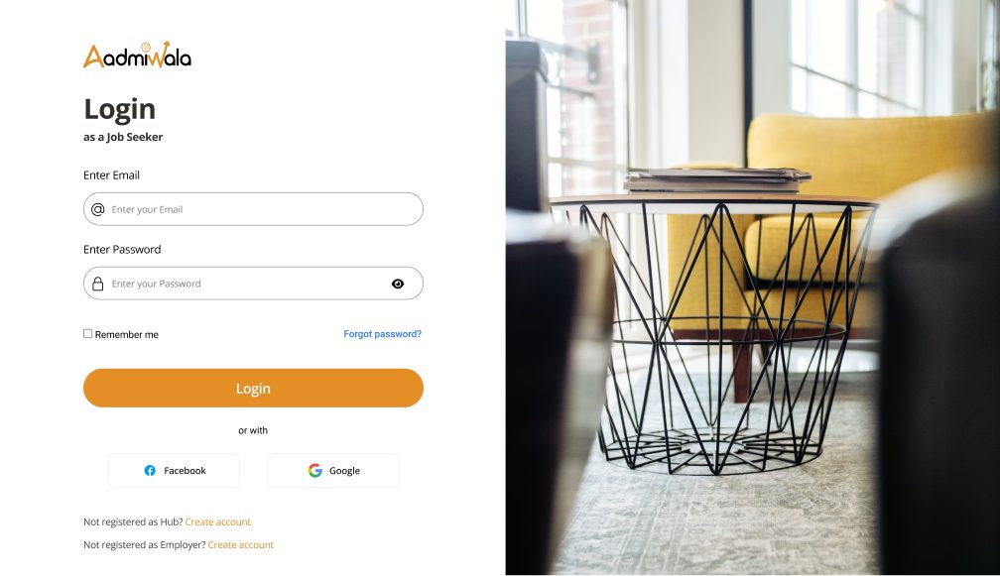
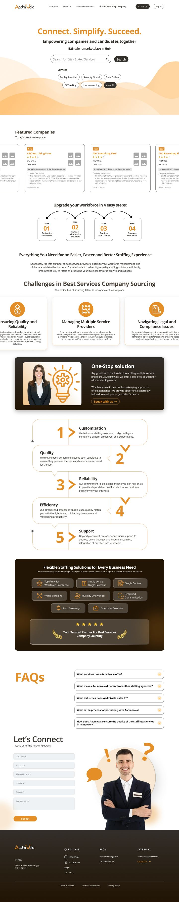
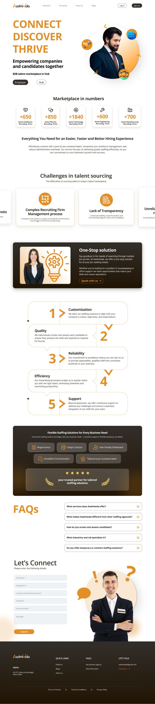
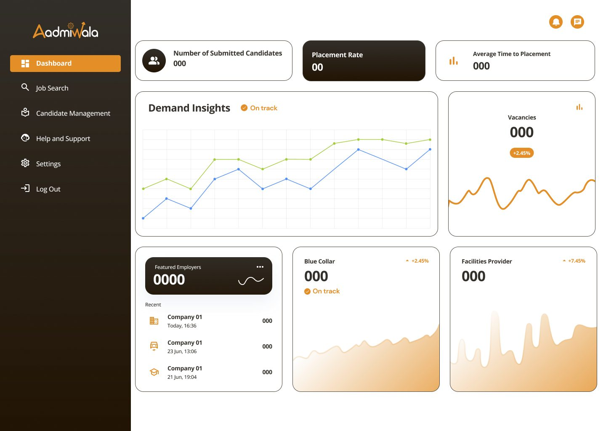
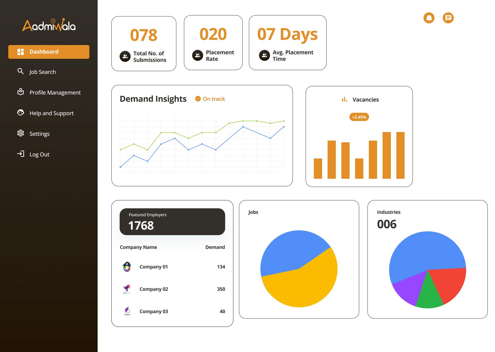
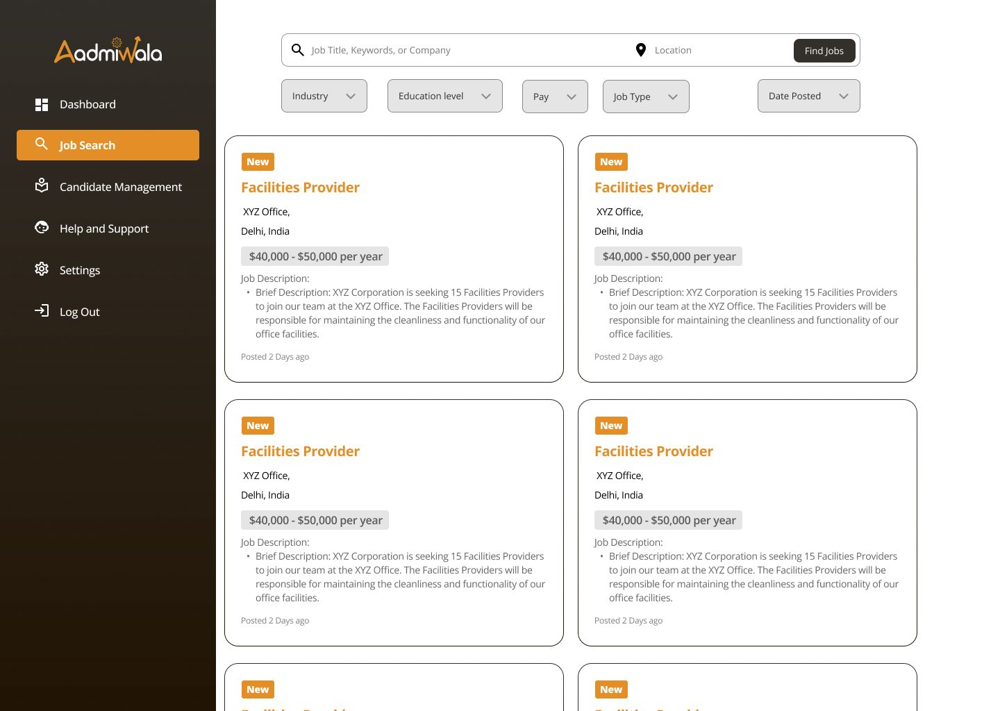
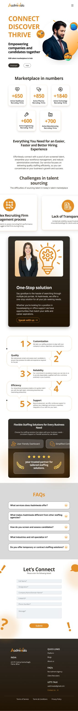
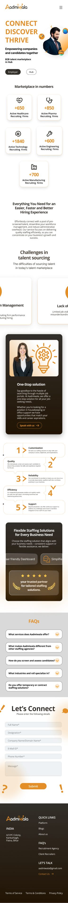

Aadmiwala
A hiring marketplace with its own side for
employers, recruiting firms and job seekers

- Client
- Real Glide
- Project
- B2B hiring platform
- Role
- UX and UI design
- Deliverables
- Website, sign-up and login flows, dashboards, responsive layouts, component library
Aadmiwala is a B2B talent marketplace. Employers share hiring needs, recruiting firms supply candidates, and job seekers find work. I designed the platform for Real Glide, from the public website to a separate dashboard for each side.
Hiring through recruiting firms is costly, slow and hard to track.
The platform is built around four problems companies run into when they hire through recruiting firms. They also open the homepage, so hiring teams see their own situation before they see the product.
- High costsHiring through a recruitment firm is expensive.
- Hard to manageCompanies have no system to judge firm performance, and struggle to find firms when they need to hire.
- No transparencyLimited job visibility leads to frustration and misunderstandings for clients and candidates.
- Unreliable qualityResume flow and quality are inconsistent, and turnaround times are unpredictable.
One marketplace, three ways in.
Employers, recruiting firms (called Hubs on the platform) and job seekers each need something different, so each gets its own sign-up, login and dashboard. The homepage asks visitors to choose Employer or Hub straight away, and every login screen links across to the other two.
- EmployersSign up with company, size and location details, then share hiring requirements.
- HubsA three-step sign-up for the firm and its services, then a dashboard to find jobs and manage candidates.
- Job seekersSign up, search roles, and follow submissions and placements from their own dashboard.

From a staffing directory to a marketplace.
The first version read like a staffing directory: search by city, state or service, browse featured companies, and hire in four steps. In the second version the marketplace comes first. The hero asks whether you are an employer or a hub, live numbers show how many firms are active in each industry, and the problems section speaks to hiring teams directly.


The numbers each side checks first.
Each dashboard opens with the few numbers that side checks most, such as submissions, placement rate and time to placement, followed by demand trends and recent activity. The sidebar keeps the same order on every side, so moving between roles feels familiar.



Built to scale down and to hand over.
I designed the homepage at desktop, tablet and phone widths, and kept every part in a shared component library: buttons, FAQ accordions, problem cards, benefit tiles, blog columns and testimonials. Each section is built once and reused across pages and screen sizes.

